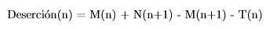

Descripción del Problema
La educación superior en Chile es un tema que todo ciudadano debe tomar en cuenta, y por ello ésta amerita un profundo estudio de su comportamiento con el objetivo de crear políticas públicas acordes a su situación actual. En este proyecto se analizarán sólo ciertos aspectos de la educación superior: los procesos de matrícula y titulación de todas las universidades, centros de formación técnica e institutos profesionales del territorio chileno; con tal de obtener posible información relacionada a correlación entre deserción y características de la carrera. Estos procesos, al ser contemporáneos y a nivel nacional, manejan un gran cantidad de datos de variados aspectos: cantidad de titulados, origen de ellos, etc.; los cuales con un análisis estadístico estándar no se podría obtener toda la información que estos datos pueden ocultar, es por eso que se debe recurrir a técnicas de minería de datos para revelar esta información. En particular, se usará la técnica de reglas de asociación, para ver cuáles son las características de las carreras que tienen correlación con que la carrera tenga una deserción alta o baja.
Descripción de los Datos
Los datos fueron obtenidos del sitio web del gobierno www.mifuturo.cl, en donde hay datasets de matriculados, titulados e información general sobre las carreras.

Matriculados
El dataset de Matriculados a la Educación Superior, con 113098 filas, entrega para los años desde el 2007 al 2015 los siguientes datos para cada carrera:- Total de matriculados por año en todos los años de educación, y también este mismo dato separado entre hombres y mujeres.
- Total de matriculados de primer año, también separado en hombres y mujeres.
- Clasificación de la institución, ésta puede ser una Universidad, Instituto Profesional o Centro de Formación Técnica. A la vez las universidades pueden ser estatales CRUCH, privadas CRUCH o privadas no CRUCH.
- Nombre de la institución junto a la ciudad y región en donde está.
- Nombre de la carrera con área y subáreas de acuerdo a distintas clasificaciones (como CINE-UNESCO u OCDE) y su duración con y sin trabajo de título.
- Clasificación de la carrera como profesional, técnica o de posgrado, si ésta es presencial o no y si es de carácter Diurno o Vespertino.
- Los rangos de edades de los matriculados, en grupos de 15 a 19 años, 20 a 24, 25 a 29, 30 a 34, 35 a 39 y 40 o más.
- Promedio de edad de los estudiantes, junto a esta misma estadística separada entre hombres y mujeres.
- Cantidad de alumnos matriculados que provienen de colegios municipales, particulares subvencionados y particulares pagados.
- Cantidad y porcentaje de alumnos que provienen de enseñanza media.
- Cantidad y clasificación de alumnos de acuerdo a colegios Científico Humanista, Técnico Profesional Comercial, Técnico Profesional Industrial, Técnico Profesional Agrícola y Técnico Profesional Marítima, y a la vez si son establecimientos para Jóvenes, Adultos y si son Vespertino y Nocturno.
Titulados
El dataset de Titulados de la Educación Superior, en sus 72986 filas, tiene para los años desde el 2007 al 2014 los siguientes datos por carrera:- Total de matriculados en el año, y también este mismo dato separado entre hombres y mujeres.
- Rango de edad de los titulados, en grupos de 15 a 19 años, 20 a 24, 25 a 29, 30 a 34, 35 a 39 y 40 o más.
- Promedio de edad de los titulados, junto a la misma estadística para hombres y mujeres.
- También están los mismos datos de los puntos 3, 4, 5 y 6 del dataset de Matriculados.
Aranceles
El dataset de aranceles obtenido de mifuturo.cl, con sus 141756 filas, contiene entre los años 2007 y 2016 los siguiente datos de cada carrera:- Costo matrícula anual, titulación y arancel anual.
- Tipo de institución 1, 2 y 3: donde 1 corresponde a si es universidad, instituto profesional o CFT; 2 corresponde a si es univesidad privada o del CRUCH, instituto profesional o CFT; y 3 corresponde a si es universidad del CRUCH estatal o privada, instituto profesional o CFT.
- Contiene Region, Comuna y Ciudad de la institución.
- Área carrera genérica, área CINUESCO, área y subárea OCDE.
- Tipo IES, código IES, nombre IES.
- Código sede, nombre sede.
- Código de la carrera (dentro de la institución), nombre carrera.
- Modalidad, jornada, tipo de carrera, si aplica o no plan especial (ej: plan para trabajadores, plan de funcionarios públicos, etc).
- Duración (en semestres) de estudios de pregrado, de titulación y en total.
- Nombre del título, grado académico, nivel global (pregrado, posgrado, postítulo), nivel carrera (bachillerato, técnica de nivel superior, licenciatura, etc).
- Código DEMRE.
- Si es está acreditada o no. Si es elegible para beca pedagógica.
- Vigencia de alumnos nuevo, o solo alumnos antiguos.
- Año de inicio.
- Vacantes semestre uno y dos.
- Puntaje PSU de corte y ponderación promedio en cada prueba de esta.
Otros Datasets
Además se agregaron los indicadores de población total de la región en donde se ubica el establecimiento de educación superior y del producto interno bruto (PIB) de la región.Limpieza de Datos
Correctitud de tipos
Se llevó todo a una base de datos, donde hubo que hacer ciertos cambios a los datos para poder importarlos correctamente, como cambiar las comas decimales por puntos y cambiar la notación de años por números, ya que estaban representados con una palabra antes.Cálculo de la deserción
Luego se creó la fórmula para calcular una aproximación de la deserción cada año, que es:
d(n): Cantidad de desertores en el año n
M(n): Cantidad de matriculados en todos los años el año n
m(n): Cantidad de matriculados en primer año en el año n
t(n): Cantidad de titulados de la carrera en el año n
La lógica detrás de esta fórmula viene de que la cantidad de matriculados totales de un año junto a los nuevos matriculados del año siguiente o se matriculan en el año, se titulan o desertan.
Este cálculo lleva a tener que eliminar tres tipos de datos:
Aquellos que les falta cualquiera de los atributos necesarios para calcular la deserción
Aquellos correspondientes al año más reciente ya que no hay suficientes datos para calcular la deserción al faltas los matriculados del año siguiente
Aquellos que muestran una deserción negativa, al analizar estos casos individualmente se ve que son porque los datos no son coherentes, por ejemplo muestran 50 matriculados y 200 titulados por año.
Normalización
Luego, toda columna que tiene cantidades fue normalizada, por ejemplo en el caso de matriculados masculinos y femeninos por carrera, ahora son una proporción con respecto a la cantidad total de matriculados de la carrera, lo mismo para los titulados. Para datos como la cantidad de matriculados, se dividió por la población total de la región y para el PIB, se usó cantidad de matriculados dividido por el PIB de la región.Exploración
Resultados Clustering
El primer intento para caracterizar la deserción con otras variables de universidades se realizó mediante clustering. La idea inicial era dado los datos para deserción y otras variables como la cantidad de matriculados masculino, la cantidad de matriculados por población, la cantidad de matriculados por PIB, la cantidad de titulados masculino, el promedio de edad, la proporcion de matriculados de colegios municipales y particulares pagados. Estas variables se pueden ver inicialmente en la siguiente scatterplot matrix.
K-Means
Para comenzar se utilizará el método de clustering k-means. Dado que este método obliga a elegir una cantidad de clusters es necesario elegirlo de forma correcta, para esto se usó el gráfico error cuadrático medio vs. cantidad de clusters, como se muestra en la figura:
Usando el método del codo, se puede ver que el cambio ocurre cercano a K=6, por lo que se decidió usar 6 clusters.
Al ejecutar el algoritmo con K=6 se obtuvieron los clusters como se muestra en la figura:
Además los centroides tienen la siguiente distribución:
deser mat_mas mat_pob mat_pib tit_mas at_edad mat_mun mat_par mat_tes 0.32586 0.67196 0.00523 0.00576 0.80091 0.62517 0.07907 0.04894 0.25873 0.58267 0.42225 0.01696 0.01965 0.32704 0.48324 0.35374 0.02744 0.76347 0.25009 0.16792 0.02431 0.03118 0.10083 0.45223 0.37611 0.05164 0.86893 0.31577 0.33289 0.00520 0.00601 0.21304 0.63324 0.09024 0.05680 0.28724 0.17526 0.50876 0.02732 0.03376 0.49188 0.44703 0.27024 0.14122 0.88397 0.34624 0.85579 0.01671 0.01979 0.91708 0.45697 0.32689 0.04811 0.84205
Donde el más interesante es el segundo que tiene la deserción más alta, sin embargo no cumple con ninguna otra relación para las demás variables (como ser el máximo o mínimo) por lo cual no se puede tener un resultado concluyente.
DBScan
Además de KMeans se probó el método de clustering DBScan el cual tiene la ventaja de encontrar los clusters por densidad y no por proximidad únicamente a diferencia de K-Means, además es tolerante al ruido y no requiere indicar el número de clusters por lo que el resultado puede ser más coherente.
El resultado de ejecutar DBScan se muestra en la siguiente figura:
El resultado muestra que la mayoría de los datos están en un único cluster y la presencia de ruido es muy alta, por lo que no se puede encontrar una asociación de la deserción con otras variables.
Validación
Dado el resultado inesperado de DBScan se procedió a ejecutar un proceso de validación sobre los resultados de KMeans, esto se realizó mediante la construcción de la matriz de distancia que se muestra a continuación:
Los resultados muestran que la existencia de clusters es forzado y en realidad los elementos no se encuentran cercanos unos con otros, por lo que los resultados del proceso no son concluyentes.
Reglas de Asociación
Nuevos Datos
Para esta etapa decidimos obtener nuevos indicadores obtenidos de los indicadores anteriormente seleccionados y el dataset de aranceles. Para ello se procedió a elegir solamente datos relevantes de la tabla de arancel como arancel y acreditación, ya que los demás datos de este dataset se pueden obtener de las demás tablas. Además dado que el proceso de reglas de asociación no se limita a tipos numéricos se pueden utilizar los atributos nominales de los dataset que antes no habían sido incluidos.
La tercera tabla de indicadores se describe como:
- Año y código de la carrera (no se tomará en cuenta al momento de buscar reglas de asociación).
- Deserción normalizada con respecto al total de matriculados. numérico
- Total de matriculados: numérico
- Porcentaje de matriculados masculinos : numérico
- Edad promedio : numérico
- Porcentaje de alumnos de colegios municipales : numérico
- Porcentaje de alumnos de colegios particulares : numérico
- Arancel anual de la carrera : numérico
- Tipo de institución : String
- Área OCDE : String
- Modalidad presencial, semi-presencial o no presencial : String
- Jornada diurna, vespertina a distancia : String
- Acreditada o no : 1 si, 2 no.
La mayoría de estos indicadores están en formato numérico y por lo tanto es imperativo discretizar. Para esto se creó un script Python que tome cada columna numérica y aplique una discretización en quintiles (5 grupos con igual cantidad de elementos), dándoles la categoría de Muy bajo, Bajo, Medio, Medio Alto, Alto.